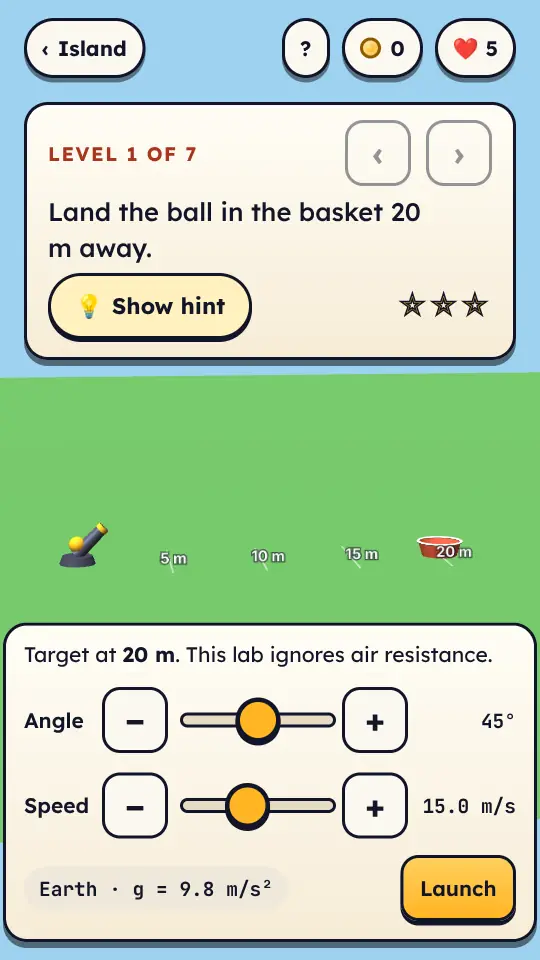

All labs › Physics › Launch
Physics lab · Raju's Workshop Yard
Launch
प्रक्षेपण · कोण और गुरुत्व
Set the angle and speed of a launcher to land a ball on target. Each level asks for a distance, and the child works out the launch that gets there.
- Physics
- Inventor · ages 10+
- 7 levels
- English · हिंदी
- Free, no sign-up

How it works
Land the ball 20 m away
- Start with the launcher at 45°, the angle that goes farthest.
- At 45° the distance is speed² ÷ 9.8. For 20 m you need speed² = 196.
- So set the speed to 14 m/s and launch. Adjust a little if you miss.
Stuck? Every level has a hint, and a "Show me" walk-through.
Why it works
The big idea
A thrown ball is like a car that drives forward at a steady speed while gravity keeps pulling it down. Too steep and it spends its speed going up; too flat and it lands early. Halfway, 45°, goes farthest.
What children learn
Skills in this lab
- Gravity pulls everything down at the same rate
- Why 45° gives the longest throw on flat ground
- Using a formula (distance = speed² ÷ 9.8 at 45°) to plan a launch
For parents and teachers
This lab is in the Inventor band (ages 10+). Each player picks a band, and sees only the labs made for it.
Curio Island is free in the browser with no sign-up. Progress is saved on this device only. Ads are child-safe and non-personalised, and never appear inside a lab.
Part of Raju's Workshop Yard on the island. 7 levels to finish.